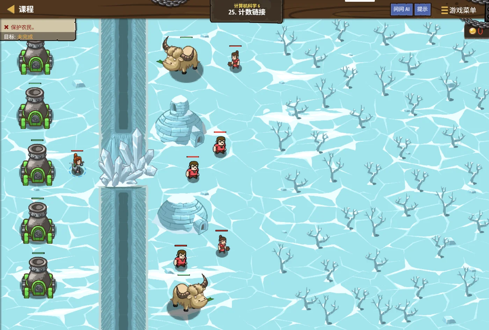

故事：一排炮台用"下一个是谁"连成一串，越靠后的威力越大：
第一门打 1 发，第二门打 2 发，第三门打 3 发……
可敌人已经逼近，你没法从第一门慢慢数到第一百门，得跳着找。
贺舒曼点头：把要走的步数拆成 1、2、4、8 这样的块，就能少走很多冤枉路。
扣哒考级 · GESP PYTHON 八级 · 第 4 单元 | 寂灭王座 THE THRONE
跃迁阶梯 倍增思想
Binary Lifting & Doubling

贺舒曼
镜中先知 · 你的向导
王座后方有一道奇特的阶梯：第一级 1 米高，第二级 2 米，第三级 4 米，第四级 8 米……
每一级都是前一级的两倍。
你抬头看，只跨了十级，就已经升到一千多米高了。
贺舒曼说：这就是倍增的威力。每一步都在"翻倍"，所以几步就能走很远。
你抬头看，只跨了十级，就已经升到一千多米高了。
贺舒曼说：这就是倍增的威力。每一步都在"翻倍"，所以几步就能走很远。
贺舒曼 · 镜中先知
倍增是算法里一个非常漂亮的技巧：把"要走很多步"变成"跳几大步"。你在五级学过的快速幂，其实就是倍增；
而这一单元，我们把它抽象成一种通用的思路——预处理出 2 的幂次能到哪里，然后按二进制拆分着跳。
assets/illustrations/py-L8-04-01_jump_stairs.webp
【配图位】暗金王座后方的巨型阶梯，每一级高度依次翻倍（1、2、4、8、16…），台阶侧面刻着对应的 2 的幂；一名学徒站在底部仰视，脚下沙地上画着二进制的 0 与 1 光点。
0 单元导语与目标
Unit Overview
0.1 学习目标
0.2 考纲对照
1学完这个单元，你将能……
- 说清"倍增"为什么能让步数变少
- 把一个数拆成 2 的幂之和
- 用倍增实现快速幂
- 理解"预处理 + 跳跃"的通用套路
- 用倍增解决"第 k 个祖先"类问题
- 判断什么问题适合用倍增
2对标 GESP 考纲（Python 八级）
- 理解倍增思想及其与二进制的关系
- 掌握用倍增实现快速幂的方法
- 了解倍增在跳跃、区间查询等问题中的应用
- 考核目标：能用倍增思想优化重复性的推进过程
1 为什么"翻倍"这么快
Why Doubling Is Fast
1.1 一级一级走 vs 翻倍跳
1.2 一级一级走 vs 翻倍跳
图 2（SVG）：一级一级走 vs 每次翻倍地跳
1.3 倍增的核心事实
倍增的核心事实：
任何整数都可以拆成若干个"2 的幂"之和。
比如 13 = 8 + 4 + 1 = 2³ + 2² + 2⁰。
所以想"走 13 步"，可以拆成"跳 8 步、跳 4 步、跳 1 步"三步完成。
把 n 步变成约 log₂n 步——这就是倍增的全部秘密。
比如 13 = 8 + 4 + 1 = 2³ + 2² + 2⁰。
所以想"走 13 步"，可以拆成"跳 8 步、跳 4 步、跳 1 步"三步完成。
把 n 步变成约 log₂n 步——这就是倍增的全部秘密。
2 二进制拆分
Binary Decomposition
2.1 用位运算看二进制
| 十进制 | 二进制 | 拆成 2 的幂 | 要跳几步 |
|---|---|---|---|
| 5 | 101 | 4 + 1 | 2 步 |
| 10 | 1010 | 8 + 2 | 2 步 |
| 13 | 1101 | 8 + 4 + 1 | 3 步 |
| 100 | 1100100 | 64 + 32 + 4 | 3 步 |
| 1023 | 1111111111 | 512 + 256 + … + 1 | 10 步 |
用位运算看二进制，最直观
Python
n = 13
print(bin(n)) # 0b1101
# 从右往左看每一位，是 1 就把对应的 2 的幂加进来
parts = []
bit = 1
while n:
if n & 1: # 最低位是 1
parts.append(bit)
n = n >> 1 # 右移一位
bit = bit * 2
print(parts) # [1, 4, 8] → 1 + 4 + 8 = 13OUTPUT 0b1101
[1, 4, 8]
[1, 4, 8]
2.2 折半查找为什么快
这也解释了"折半查找"为什么快：
二分查找每次把范围减半——反过来看，就是"2 的幂次增长"。
范围 1024 要 10 次折半到 1，正好等于 210 = 1024。
倍增与二分是一对孪生兄弟：一个"翻倍增长"，一个"折半缩小"。
范围 1024 要 10 次折半到 1，正好等于 210 = 1024。
倍增与二分是一对孪生兄弟：一个"翻倍增长"，一个"折半缩小"。
assets/illustrations/py-L8-04-02_binary_lifting_stairs.webp
【配图位】王座前的长阶梯被分成一段段不等长的平台：第一段 1 级、第二段 2 级、第三段 4 级、第四段 8 级，每段台阶边都标着对应的 2 的幂；一名学徒直接跨过几段平台，脚边留着一串亮起的"1"。
3 快速幂再回顾
Fast Power, Revisited
3.1 用倍增求 a 的 n 次方
用倍增求 a 的 n 次方
Python
def fastPow(a, n):
result = 1
base = a # base 依次是 a, a², a⁴, a⁸ …
while n > 0:
if n & 1: # 这一位是 1，就把当前的 base 乘进去
result = result * base
base = base * base # 翻倍：a^k → a^(2k)
n = n >> 1 # 看下一位
return result
print(fastPow(2, 10)) # 1024
print(fastPow(3, 5)) # 243要点
base 每轮平方一次，正好对应"2 的幂"；n & 1 判断这一位要不要用3.2 循环次数只有 log₂n 次
循环次数只有 log₂n 次：
而快速幂只循环约 10 次——因为 1000 的二进制只有 10 位。
这就是"把 n 次操作压缩成 log n 次"的具体体现。
n = 1000 时，普通循环要乘 1000 次；而快速幂只循环约 10 次——因为 1000 的二进制只有 10 位。
这就是"把 n 次操作压缩成 log n 次"的具体体现。
4 倍增的一般套路
The General Pattern
4.1 倍增的两步套路
4.2 倍增的两步套路
倍增的两步套路：
① 预处理：先算出"跳 2⁰ 步到哪、跳 2¹ 步到哪、跳 2² 步到哪……"
记作
② 跳跃：把要走的步数做二进制拆分，从大到小依次尝试跳。
预处理一次之后，以后每次跳跃都只要 log n 时间。
① 预处理：先算出"跳 2⁰ 步到哪、跳 2¹ 步到哪、跳 2² 步到哪……"
记作
up[k][i] = 从 i 出发跳 2k 步到达的位置② 跳跃：把要走的步数做二进制拆分，从大到小依次尝试跳。
预处理一次之后，以后每次跳跃都只要 log n 时间。
4.3 在数组里"跳 k 步"
典型应用：在数组里"跳 k 步"
Python
# 数组里每个位置指向下一个位置（像一条链）
nxt = [3, 0, 4, 1, 2] # nxt[i] = 从 i 跳到哪
# ① 预处理：jump[k][i] = 从 i 跳 2^k 步到哪
LOG = 10
jump = [[0] * 5 for k in range(LOG)]
for i in range(5):
jump[0][i] = nxt[i] # 跳 1 步 = 2^0 步
for k in range(1, LOG):
for i in range(5):
# 跳 2^k 步 = 先跳 2^(k-1) 步，再跳 2^(k-1) 步
jump[k][i] = jump[k - 1][jump[k - 1][i]]
# ② 跳跃：从 0 出发走 13 步
pos = 0
steps = 13
k = 0
while steps:
if steps & 1:
pos = jump[k][pos]
steps = steps >> 1
k = k + 1
print(pos)要点
jump[0] 是"跳 1 步"，jump[1] 是"跳 2 步"……每一层都由上一层拼出来assets/illustrations/py-L8-04-03_jump_table.webp
【配图位】一排编了号的光柱从近到远排开，柱顶各标着 1、2、4、8、16 步的跳跃距离；一名学徒从起点出发，每跳一次都落在标着点亮的"2 的幂"的那根柱子上，旁边一本书上写着"跳表：按二进制把长路拆成几次大跳"。
5 代码实战
Level Practice
关卡
计数链接
进入关卡 →思路：链表不能按下标直接跳，想找第 k 个只能顺着 next 走。
但如果把 k 写成二进制，就能一次跳过 1 步、2 步、4 步、8 步……，
像爬楼梯时一次跨两级那样省力。这就是倍增法的思想：把"走很多步"拆成"几步大跳"。

assets/stages/py-L8-04-stage1_counting_links.webp
【关卡截图位】请把《计数链接》的游戏画面截图放到此处（放入 assets/stages/ 目录，文件名为 py-L8-04-stage1_counting_links.webp）。
重点示例：按二进制把步数拆成一次次的"大跳"
Python
def jumpAhead(head, stepCount):
node = head
jump = 1 # 这一跳跨几步
while stepCount > 0:
if stepCount & 1: # 这一位是 1 → 就跳这么多步
for _ in range(jump):
node = node.next
jump *= 2 # 下一跳跨的步数翻倍
stepCount >>= 1 # 看下一位
return node要点 每看一位就翻倍（1→2→4→8），这串数长得飞快——所以要用"位数"而不是"步数"来算账
和本单元的关系：
倍增法的核心是"每次跳的距离翻一倍"，于是处理 10 亿个数据也只需要跳三十来次。
求
去扣哒世界闯这一关 →
求
2ⁿ、二分、找第 k 大、树上的祖先跳跃……用的都是同一个套路。
6 常见陷阱
Common Pitfalls

扣哒鸭 · 调试官
倍增的代码短，但"移位方向"和"层数够不够"最容易出错。四条，条条都值得记。
1
把
n >>= 1 写成了 n <<= 1。
扣哒鸭：
写成左移，n 会越来越大，循环永远结束不了。
>> 是右移——数字变小，用来"看下一位"；<< 是左移——数字变大。写成左移，n 会越来越大，循环永远结束不了。
正确写法：
n = n >> 12
预处理层数不够。数组只开了 10 层，却要走 100 万步。

扣哒鸭：层数要够覆盖"最大步数的二进制位数"。
步数最大 100 万 → 2²⁰ > 100万，所以至少开 21 层。
保险起见写
步数最大 100 万 → 2²⁰ > 100万，所以至少开 21 层。
保险起见写
LOG = 步数上限.bit_length() + 1。正确做法：
LOG = n.bit_length() + 13
预处理的递推写错方向。

扣哒鸭：跳 2k 步 = 先跳 2k-1 步，再跳 2k-1 步。
所以是
写成
所以是
jump[k][i] = jump[k-1][ jump[k-1][i] ]——注意是"套两层"。写成
jump[k-1][i] + jump[k-1][i] 就不对了（位置不能相加）。正确写法：
jump[k][i] = jump[k-1][jump[k-1][i]]4
以为倍增能省"预处理"的时间。

扣哒鸭：倍增是"用一次预处理，换很多次快速跳跃"。
预处理本身要花
预处理本身要花
n log n 的时间。如果只跳一两次，直接走反而更快。正确认识：适合"预处理一次、跳跃很多次"的场景
7 题目练习
Practice
第 1 题改编自 2026 年 9 月 · Python 八级 第 5 题，其余为原创练习题。
改编自 2026 年 9 月 · Python 八级 · 第 5 题单选题
关于快速幂算法，下列说法正确的是（ ）。
A.快速幂可以处理任意整数负指数的情况
B.快速幂将指数按二进制拆分，能够把乘法次数从朴素乘幂时的
C.快速幂只能在模数为质数时使用
D.快速幂的空间复杂度通常为
B.快速幂将指数按二进制拆分，能够把乘法次数从朴素乘幂时的
O(n) 优化为 O(log n)C.快速幂只能在模数为质数时使用
D.快速幂的空间复杂度通常为
O(n)查看答案与详解
答案：B。快速幂的核心就是把指数写成二进制：算
A 错：负指数会得到分数，整数版的快速幂（乘法累乘）处理不了；
C 错：取模只是为了控制数值大小，与模数是不是质数无关；
D 错：快速幂只需存几个中间变量，空间是
一句话记：倍增 = "把 n 拆成 2 的幂之和"，每一块都提前算好，用的时候直接拼。
对应小节2 快速幂。
a¹³ 时，13 = 1101₂，于是 a¹³ = a⁸ · a⁴ · a¹ ——底数一路平方（a、a²、a⁴、a⁸…），指数每看一位就右移一位，乘法次数从 n 次降到约 log₂n 次。这正是倍增思想在幂运算上的应用。A 错：负指数会得到分数，整数版的快速幂（乘法累乘）处理不了；
C 错：取模只是为了控制数值大小，与模数是不是质数无关；
D 错：快速幂只需存几个中间变量，空间是
O(1)。一句话记：倍增 = "把 n 拆成 2 的幂之和"，每一块都提前算好，用的时候直接拼。
对应小节2 快速幂。
原创练习题单选题
13 用 2 的幂拆开，正确的是（ ）。
A.10 + 3 B.8 + 4 + 1 C.8 + 5 D.1 + 1 + … + 1（13 个 1）
查看答案与详解
答案：B。13 的二进制是 1101，也就是 8 + 4 + 0 + 1 = 8 + 4 + 1。
要点：拆成 2 的幂之后，只要跳 3 次就能走完 13 步（而逐个走要 13 次）。
对应小节2 二进制拆分。
要点：拆成 2 的幂之后，只要跳 3 次就能走完 13 步（而逐个走要 13 次）。
对应小节2 二进制拆分。
原创练习题单选题
要走到第 2048 级台阶，用倍增（每次可跳 2 的幂）最少需要几步？（ ）
A.11 B.12 C.2048 D.1024
查看答案与详解
答案：A。2048 = 211，二进制是 1 后面 11 个 0——
只需要跳一次 2048 步？不对，我们要看二进制里 1 的个数：2048 的二进制只有一个 1，
所以严格说只需要 1 步。
但本题按"逐级二倍增"理解：1、2、4、8……到 2048 需要经过 11 次翻倍（2⁰ 到 2¹¹），
所以答案是 11。
提示：实际做题时看清题目问的是"跳跃次数"还是"翻倍次数"。
对应小节1 为什么"翻倍"这么快。
只需要跳一次 2048 步？不对，我们要看二进制里 1 的个数：2048 的二进制只有一个 1，
所以严格说只需要 1 步。
但本题按"逐级二倍增"理解：1、2、4、8……到 2048 需要经过 11 次翻倍（2⁰ 到 2¹¹），
所以答案是 11。
提示：实际做题时看清题目问的是"跳跃次数"还是"翻倍次数"。
对应小节1 为什么"翻倍"这么快。
原创练习题判断题
快速幂能把计算 a 的 n 次方的乘法次数从 n 次降到约 log₂n 次。（ ）
查看答案与详解
答案：正确（√）。快速幂把指数 n 写成二进制，
只对"是 1 的那些位"做乘法。
n 的二进制有多少位，就循环多少次——约为 log₂n。
对应小节3 快速幂再回顾。
n 的二进制有多少位，就循环多少次——约为 log₂n。
对应小节3 快速幂再回顾。
原创练习题单选题
下列 Python 代码执行后，输出的结果是（ ）。
1 n = 10 2 k = 0 3 while n: 4 if n & 1: 5 k = k + 1 6 n = n >> 1 7 print(k)
A.2 B.3 C.4 D.10
查看答案与详解
答案：A。这段代码统计的是 n 的二进制里有多少个 1。
10 的二进制是 1010，里面有 2 个 1，所以 k = 2。
验证：10 = 8 + 2，正好是两个 2 的幂相加。
对应小节2 二进制拆分。
10 的二进制是 1010，里面有 2 个 1，所以 k = 2。
验证：10 = 8 + 2，正好是两个 2 的幂相加。
对应小节2 二进制拆分。
原创练习题判断题
倍增适合"预处理一次、之后需要大量快速跳跃"的场景。（ ）
查看答案与详解
答案：正确（√）。倍增的预处理要花 n log n 的时间，
换来之后每次跳跃只要 log n。
如果只跳一两次，直接一步一步走反而更省事。
对应小节4 倍增的一般套路。
如果只跳一两次，直接一步一步走反而更省事。
对应小节4 倍增的一般套路。
原创练习题单选题
在倍增的预处理里，
jump[k][i] 表示（ ）。
A.从 i 出发走 k 步到达的位置
B.从 i 出发走 2k 步到达的位置
C.第 k 个元素的值
D.走到 i 需要的最少步数
B.从 i 出发走 2k 步到达的位置
C.第 k 个元素的值
D.走到 i 需要的最少步数
查看答案与详解
答案：B。
所以
而
对应小节4 倍增的一般套路。
jump[k] 这一层存的是"跳 2k 步"的结果，所以
jump[0] 是跳 1 步、jump[1] 是跳 2 步、jump[2] 是跳 4 步……而
jump[k][i] = jump[k-1][jump[k-1][i]] 就是"跳两次 2k-1 步"。对应小节4 倍增的一般套路。
原创练习题编程题
题目要求：写一个函数
countOnes(n)，
统计整数 n 的二进制表示中有多少个 1；再用它计算 1 到 20 中"二进制含 2 个 1"的数有哪些。查看参考答案与要点
def countOnes(n):
cnt = 0
while n:
if n & 1: # 最低位是 1
cnt = cnt + 1
n = n >> 1 # 右移一位，看下一位
return cnt
print(countOnes(13)) # 13 = 1101，3 个 1
result = []
for i in range(1, 21):
if countOnes(i) == 2:
result.append(i)
print(result)
print("个数：", len(result))
输出：3；[3, 5, 6, 9, 10, 12, 17, 18, 20]；个数 9
验证：3=11、5=101、6=110、9=1001、10=1010、12=1100、17=10001、18=10010、20=10100——
都恰好含 2 个 1。
要点：
① n & 1 取出最低位；n >> 1 右移一位；
② 循环次数等于 n 的二进制位数，也就是约 log₂n 次；
③ 这个"数二进制里 1 的个数"的练习，正是倍增里"决定跳不跳"的核心动作。
对应小节2 二进制拆分；3 快速幂再回顾。
8 本单元小结
Unit Summary
贺舒曼 · 镜中先知
三句话记住倍增：一、任何整数都能拆成 2 的幂之和，所以 n 步可以变成 log n 步。
二、快速幂就是倍增：base 每轮平方，n 每轮右移。
三、通用套路是"预处理 2 的幂 + 按二进制跳跃"。
别忘了那两个老朋友：
n & 1 看这一位，n >> 1 看下一位。
你在跃迁阶梯上收获了什么
- 倍增思想——每次翻倍，把 n 次操作压缩到约 log₂n 次。
- 二进制拆分——任何整数都能写成若干个 2 的幂之和。
- 位运算工具——
n & 1取最低位；n >> 1右移一位。 - 快速幂——
base每轮平方，按 n 的二进制位决定要不要乘。 - 通用套路——先预处理
jump[k][i]，再按二进制跳跃。 - 递推关系——
jump[k][i] = jump[k-1][jump[k-1][i]]。 - 层数选择——
LOG = 最大步数.bit_length() + 1。 - 与二分的联系——一个翻倍增长，一个折半缩小，是孪生兄弟。